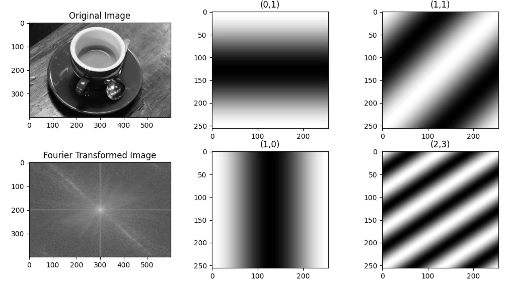
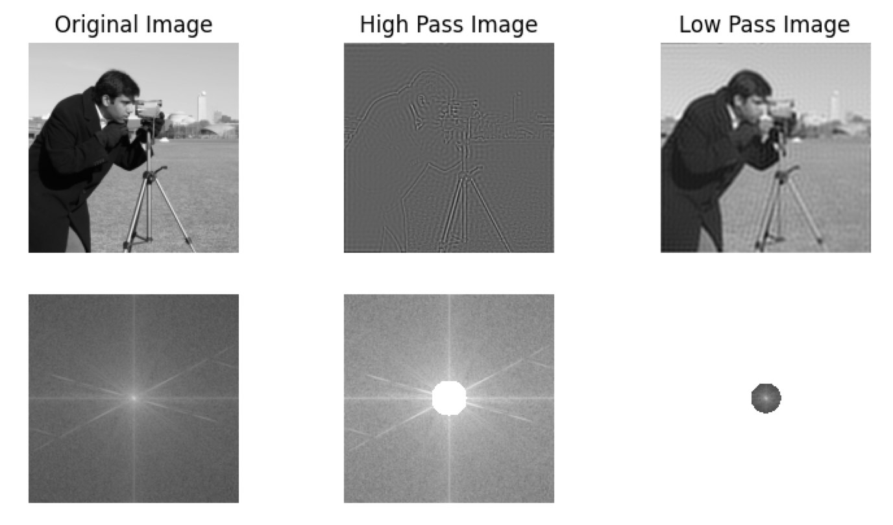
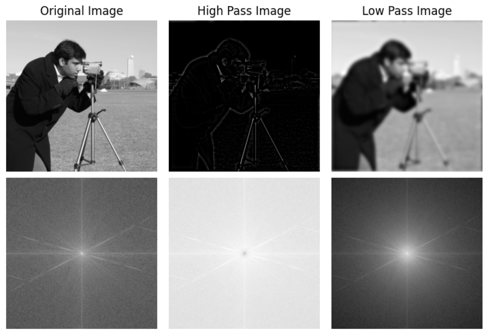
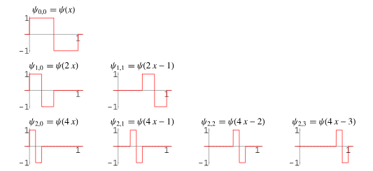

通过np.fft.fft2可以进行图片的傅里叶变换。👉 代码

简单的把频域切成高通与低通，会产生"振铃"效应。👉 代码

👉 代码

Haar 小波基函数，(a) 为缩放因子，(b) 为平移因子
$$ \psi_{a,b}(x)=|a|^{-1/2}\psi\left(\frac{x-b}{a}\right) $$
对于离散小波：i为缩放因子，j为平移因子
$$ a=2^j, b=ia $$ $$ \phi_j^{i}(x)=2^{j/2}\phi(2^j x-i) $$

[1]